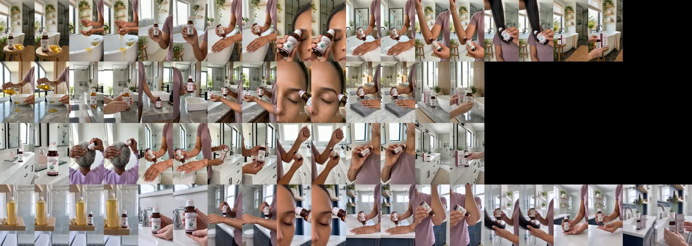

Round 4: grandma now holds the roll-on, and 10 shots where the bottle looked too big are remade at its real size (50 ml, about as tall as a finger). New footage for every line, made the LGXNDS way (clean product stills from the reference sheet, Seedance reference mode, no Kling, no old clips). Each video is in one of your four bathrooms, in daylight. Voice: the round-2 E voice.
“Castor oil is liquid gold, but why is it SO messy to use? This roll-on is freaking genius! No pouring, no oily fingers. Use it to condition your brows, soften cuticles, moisturize dry skin, or add shine to your hair. I linked it in the orange cart. You’re welcome!”
Golden oil by the roll-on · oil through fingers · lifts the roll-on · back of hand · brow · cuticles · elbow · hair ends · box.
“The ONLY thing I hate about castor oil is how thick and messy it is! But castor oil is liquid gold, so this roll-on is freaking genius! No pouring, just targeted application for your brows, hair, cuticles and dry skin. Imma do y’all a favor and link it in the orange cart!”
Oil overflows a spoon · roll-on in the sun · lifts it · one spot on the wrist · brow to hairline · cuticles to knuckles · box.
“Let’s be real, castor oil doesn’t smell like your favorite perfume. But grandmama knew what she was doing with this liquid gold for her hair, skin and nails. When I saw they made it into a roll-on, I had to get it. No pouring, no oily fingers, just roll it where you need it. I linked this one in the orange cart. You’re welcome!”
Perfume beside the roll-on · grandma rolling the roll-on along her part · nails and skin · takes it out of the box · forearm, clean fingers · collarbone · box.
“If you keep castor oil around, you need to see this! It’s USDA organic, cold-pressed and hexane-free, and the roll-on makes application so much easier. Brows, dry cuticles, rough skin, hair ends, without the usual oily mess. Imma do y’all a favor and link it in the orange cart!”
Big old castor bottle · the small roll-on beside it · label close-up · forearm · brow · cuticles · elbow · hair ends · clean fingers · box.
One row per video (1 to 4): the first and last frame of every shot.
